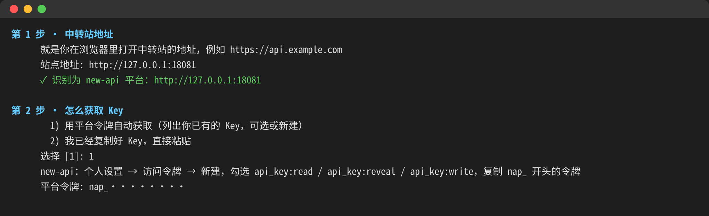
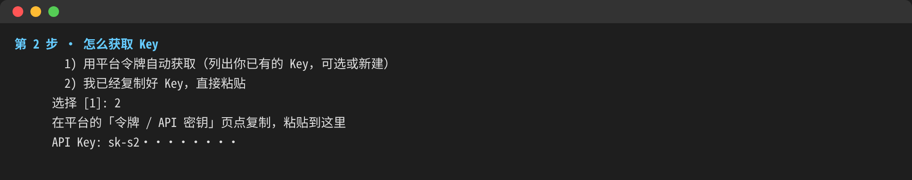
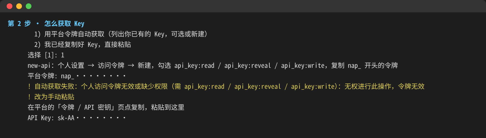
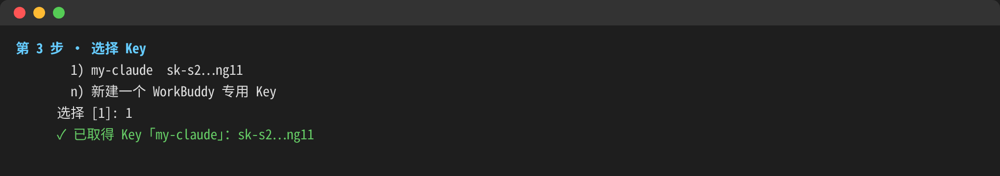
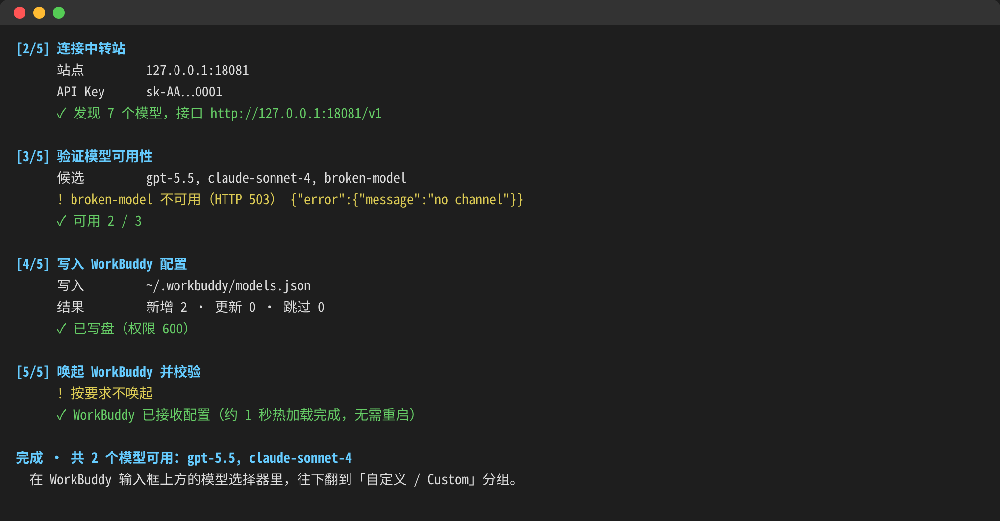

版本 v2.1.0 · 2026-10-24
这个小工具能把你在中转站（new-api 或 sub2api 搭建的网站）上的 API Key，一键导入到 WorkBuddy 里。导入以后，你就能在 WorkBuddy 里直接选用中转站提供的模型，不用再手动填地址、复制 Key。
使用前，电脑上要先装好 WorkBuddy（https://www.workbuddy.cn/）。
打开下载页 https://github.com/xtianowner/workbuddy-relay/releases/latest，在页面底部的「Assets」里，按你的电脑选一个下载：
| 你的电脑 | 下载这个文件 |
|---|---|
| Windows | workbuddy-relay-2.1.0-win.zip |
| Mac（M1/M2/M3/M4 等 Apple 芯片） | workbuddy-relay-2.1.0-mac-arm64.zip |
| Mac（Intel 芯片） | workbuddy-relay-2.1.0-mac-x64.zip |
下载后双击 zip 解压，会得到一个文件夹，里面有程序和一份 README.txt。
双击 WorkBuddy-Relay-Import.exe，会弹出一个黑色窗口，所有操作都在这个窗口里完成。
第一次运行时，Windows 可能弹出蓝色提示「Windows 已保护你的电脑」。点「更多信息」，再点「仍要运行」就行。出现这个提示是因为程序没有做商业签名，并不代表有病毒。
双击 WorkBuddy-Relay-Import，系统会自动打开「终端」窗口运行它。
第一次打开时，Mac 可能提示「无法打开，因为无法验证开发者」。处理方法：
在较早的 macOS 版本上，也可以在程序上点右键 →「打开」→「打开」。
程序会先检查电脑上有没有装 WorkBuddy。如果提示没找到，请先安装 WorkBuddy，再重新双击运行。检查通过后，程序会一步一步提问，你按提示输入，然后按回车。
看到「第 1 步 · 中转站地址」时，输入你平时用浏览器打开中转站的那个网址，比如 https://api.example.com，然后按回车。
程序会自动识别这个站点是 new-api 还是 sub2api，识别成功会显示绿色的 ✓。

图 3-1 填写站点地址后，识别为 new-api；接着选择 1，粘贴平台令牌（令牌已打码）。截图来自本地测试站点，所以地址是 127.0.0.1，你看到的会是自己中转站的网址。
看到「第 2 步 · 怎么获取 Key」时，有两种方式可选：
api_key:read、api_key:reveal、api_key:write 这三项权限都勾上；nap_ 开头的令牌，回到程序窗口粘贴，再按回车。sub2api 获取平台令牌的步骤比较麻烦，建议在网站的「API 密钥」页面点复制，回到程序选 2，然后粘贴。

图 4-3 选择 2 以后，粘贴以 sk- 开头的 Key（Key 已打码）。
如果令牌不对，或者没勾全权限，程序会用黄色文字提示「自动获取失败」，然后自动切换到粘贴 Key 的方式，你粘贴 Key 继续就可以。

图 4-4 令牌无效时，程序自动改为手动粘贴。
如果你是用平台令牌获取的，程序会显示「第 3 步 · 选择 Key」，列出你账号里已有的 Key（只显示开头和结尾几位）：

图 5-1 选择已有的 Key。
选好以后，程序会自动完成后面的事：连接中转站、测试哪些模型能用、写入 WorkBuddy。看到最后一行「完成 · 共 N 个模型可用」就说明成功了。

图 5-2 导入完成。不能用的模型会用黄色标出并自动跳过，只导入能用的。
在 Windows 上，看到「按回车键关闭窗口…」时按回车就能关掉窗口；在 Mac 上，直接关闭终端窗口即可。
先安装 WorkBuddy 并至少打开一次，然后重新运行本工具。
见第 2 章，按步骤放行即可。
说明中转站这个模型现在调不通，比如没有可用的渠道，或者余额不足。程序只会导入能用的模型，等站点那边恢复后再运行一次就行。
请检查三件事：Key 是否复制完整、Key 在网站上是否处于启用状态、账户余额是否充足。
不会。同一个站点重复导入只会更新原来的条目，还会自动清理以前导入后不能用的旧条目。
平台令牌只在运行时用一下，不会保存。Key 会写进 WorkBuddy 自己的配置文件，WorkBuddy 要靠它来调用模型。这个文件只有你自己的账户能读。
重新运行本工具，填新的站点地址或者选新的 Key 就行。
遇到问题或者有建议，可以到这里提交：https://github.com/xtianowner/workbuddy-relay/issues，点「New issue」。
请写清楚这几件事：用的是 Windows 还是 Mac、做到了第几步、你希望看到什么、实际看到了什么。最好附一张程序窗口的截图，记得先把 Key 和令牌打码。
本工具是开源软件（MIT 许可），源码地址：https://github.com/xtianowner/workbuddy-relay